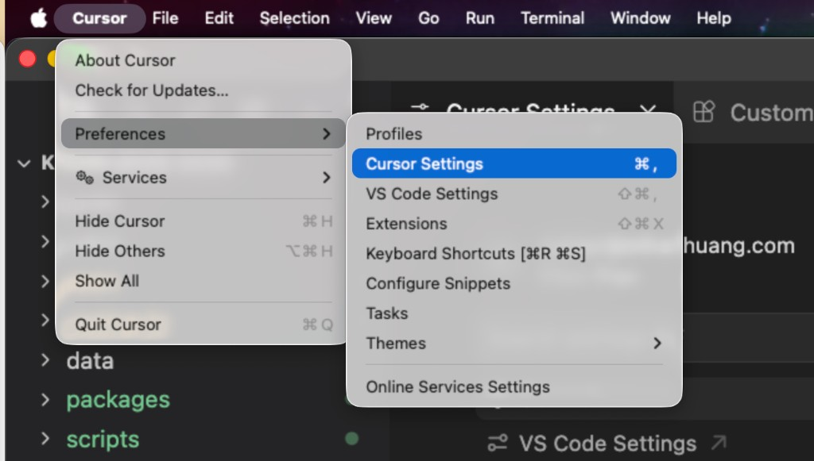
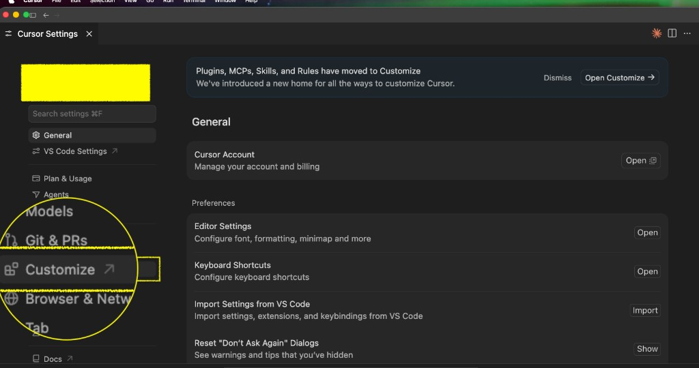
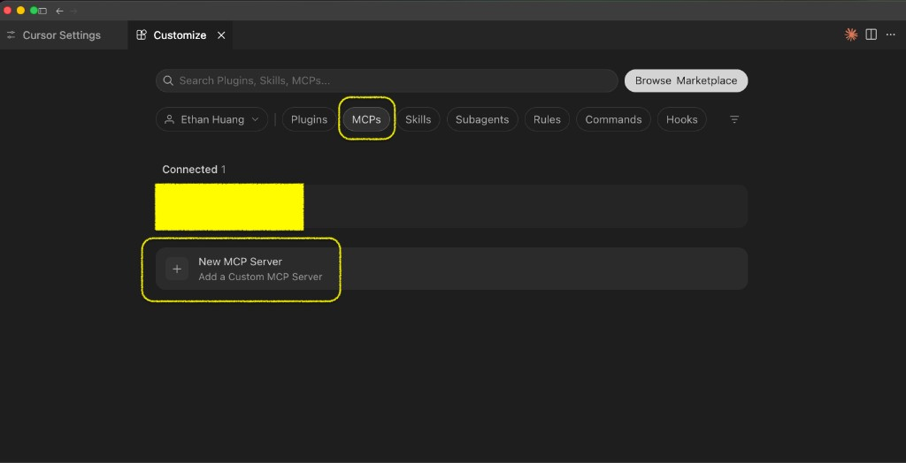
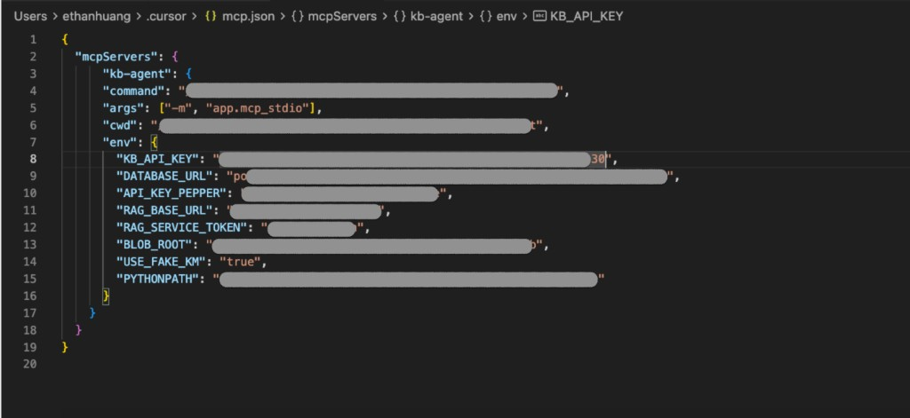
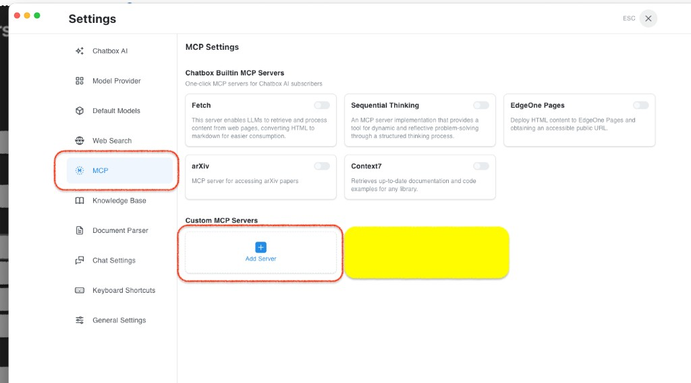
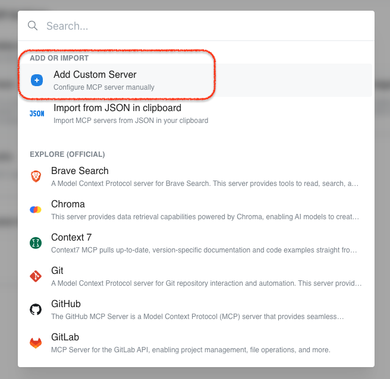
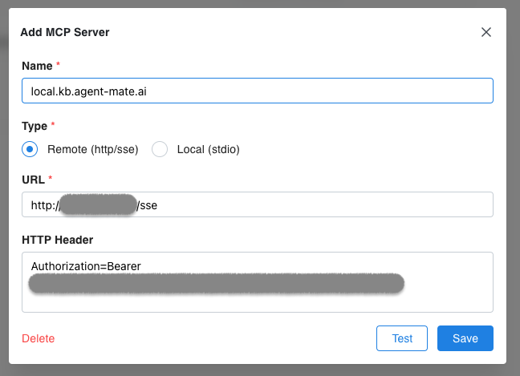

Connect
接入指南
你带着自己的模型来用私人知识库。一把 API Key；IDE 与第三方工具传输不同。
1. 架构指南
调用者是谁
- IDE — 如 Cursor、CodeBuddy 里的 Agent / 项目会话
- 聊天客户端 — 如 ChatBox
- 自有应用 — 如 HCP Engagement Assistant
以上都须自带大模型（或由宿主接入 LLM），用来理解意图、做业务判断、消费检索结果。
kb.agent-mate.ai 提供什么
- 管理你在各项目中沉淀的知识（一人一库，按 user 隔离）
- 按输入检索已有知识，返回可引用片段
- 按需从外部找候选材料；你确认后才入库
- 归纳整理知识体系（分类、标签、项目归属）
两种调用方式
IDE / ChatBox HCP / 自有 App │ MCP │ REST └───────────┬───────────────┘ │ Bearer API Key ▼ kb.agent-mate.ai 检索 · 提案 · 确认入库 │ ▼ 私人知识库 user 隔离
MCP
IDE · ChatBox
远程 MCP 工具面（检索 / 提案 / 确认 / 列表 / 内容概述 ≤400 字）。IDE 与第三方客户端传输不同，见第 3–4 节。
REST
HCP · 自有应用
HTTP 调 /api/v1/kb/*；与 MCP 同一套能力语义。
MCP 与 REST 共用一把 Key、同一知识库；请求体里的用户标识不能覆盖 Key 身份。
大模型怎么分工
你自带的模型
- 理解意图与任务目标
- 决定要不要外部补给、如何解读命中
- 按业务逻辑筛选、组合知识
- 产出洞察、策略、文案等下游结果
本站内嵌模型
- 库内检索、列表、体系整理辅助
- 外部候选检索与正文拉取
- 入库提案：≤400 字内容概述、分类建议、查重
- 确认后的持久化与向量化
本站帮你找到并管好知识，不替你做完生意。要投放策略或业务结论，须由你侧模型结合业务数据完成；外部材料须确认后才入库。
2. 获取 API Key
管理员在管理台签发使用者 Key；列表可再次「查看」完整明文。MCP 与 REST 使用同一把 Key。
请求头：Authorization: Bearer <api_key>
吊销立即失效；重签换密钥，知识库保留。
3. IDE 接入
以 Cursor 与 CodeBuddy 为例。本地推荐 stdio（mcp.json）；也可使用远程 Streamable HTTP。
Cursor
-
01
打开 Cursor Settings
菜单 Cursor → Preferences → Cursor Settings（或 ⌘,）。

Cursor 菜单打开 Preferences → Cursor Settings -
02
进入 Customize
左侧栏选择 Customize（Plugins、MCPs、Skills 已迁至此）。

Cursor Settings 左侧栏高亮 Customize -
03
MCPs → New MCP Server
筛选 MCPs，点击 New MCP Server / Add a Custom MCP Server。

Customize 中 MCPs 分类与 New MCP Server -
04
按模板填写 mcp.json
在打开的 mcp.json 中配置 kb-agent（stdio）。KB_API_KEY 填使用者 Key 明文；API_KEY_PEPPER 须与签发环境一致。

mcp.json 中 kb-agent stdio 与 env 示例
mcp.json 模板（占位符换成你本机路径与密钥；勿提交到 Git）
{
"mcpServers": {
"kb-agent": {
"command": "<REPO>/.venv/bin/python",
"args": ["-m", "app.mcp_stdio"],
"cwd": "<REPO>/services/kb-agent",
"env": {
"KB_API_KEY": "<paste_plaintext_user_api_key>",
"API_KEY_PEPPER": "<same_as_agent_and_admin_dotenv>",
"DATABASE_URL": "postgresql+psycopg://kb:<password>@127.0.0.1:5434/kb_agent",
"RAG_BASE_URL": "http://127.0.0.1:8001",
"RAG_SERVICE_TOKEN": "<same_as_dotenv>",
"BLOB_ROOT": "<REPO>/data/blob",
"PYTHONPATH": "<REPO>/services/kb-agent"
}
}
}
}远程备选：Transport = Streamable HTTP，URL 本地 http://127.0.0.1:8000/mcp，生产 https://kb.agent-mate.ai/mcp，鉴权 Authorization: Bearer <api_key>。不要填 /sse。
CodeBuddy：在 MCP / 插件设置中新增服务器，字段与上表相同——本地可用同类 mcp.json，或 Remote MCP 指向 /mcp。
连通后可试：kb_list_knowledge → kb_internal_search →（可选）propose / confirm。
4. 第三方工具接入
以 ChatBox 为例。须使用 Remote (http/sse) 与 /sse 路径，不能填 /mcp。
-
01
Settings → MCP
打开 ChatBox 设置，左侧选择 MCP。

ChatBox MCP Settings，侧栏 MCP 与 Add Server -
02
Add Custom Server
Custom MCP Servers → Add Server → 选择 Add Custom Server。

ChatBox 选择 Add Custom Server -
03
填写服务器（注意 SSE）
Type = Remote (http/sse)。URL 本地 http://127.0.0.1:8000/sse，生产 https://kb.agent-mate.ai/sse。HTTP Header：Authorization=Bearer <api_key>。

ChatBox Add MCP Server 表单，Type 为 Remote http/sse，URL 以 /sse 结尾
点 Test，通过后再 Save；在会话中启用该 MCP。
不要填 /mcp。ChatBox 会对 URL 发 SSE GET，/mcp 会报 404。
连通后可试：kb_list_knowledge → kb_internal_search →（可选）propose / confirm。